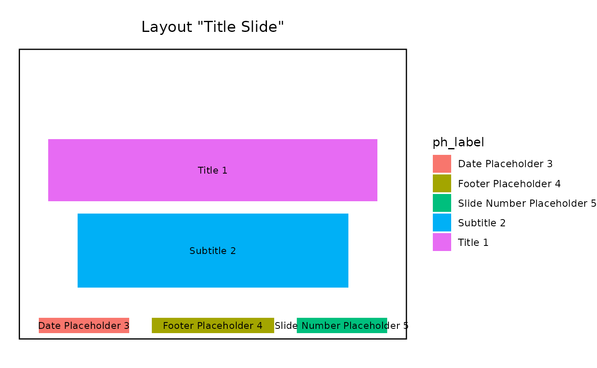

mirage.Rmd
library(mirage)
#> Loading required package: polishFor the purpose of this document, let’s start by laying out some vocabulary about Microsoft PowerPoint documents. - A document is made of several slides - Each slide has a particular layout, from the list of available layouts in the document’s template - A placeholder is a location on the slide for content can be added to - A layout is made of several potential placeholders - A slide can have various displays (text, images, etc …) placed either in these pre-existing placeholders, or in placeholders that are specific to the slide.
The goal of the mirage package is to help with creating
and updating powerpoint documents throughout all these steps. As such,
mirage can create and delete slides, or update them by adding displays
to either predefined or bespoke placeholders.
This vignette should give users enough information to get started with creating powerpoint documents and add various contents to them with mirage.
You can start by using the load_pptx() to load your own
Powerpoint document, or simply start with an empty document with the
basic PowerPoint Template.
# pptx <- load_pptx("//where/is/your/document.pptx")
pptx <- load_pptx()mirage uses a custom S3 class
<pptx_container> that thinly wraps around the “rpptx”
class from officer to add some mirage specific
functionality.
pptx
#> <pptx_container> with 0 slides.
#> ℹ Available layouts: "Title Slide", "Title and Content", "Section Header", "Two
#> Content", "Comparison", "Title Only", and "Blank".
#> ℹ Use `list_placeholders(index = )` or `list_placeholders(layout = )` to get
#> information about available placeholders
#> ℹ Use `mirage::add_slide()` or `mirage::update_slide()` to add content to new
#> or existing slidesOnce you have a presentation, you typically want to add slides with content. Although these two operations can be performed together, we have separated them in this document for clarity.
The add_slide() function can be used to add one slide
with a given layout from the list of available layouts, it returns a
modified pptx object which allows adding multiple slides by
chaining calls to add_slide().
Let’s start by creating a document from the PowerPoint template with 3 slides.
pptx <- load_pptx() |>
add_slide("Title Slide") |>
add_slide("Title and Content") |>
add_slide("Two Content")By default, the new slide is placed at the end of document, but
add_slide() also accepts an index= argument if
you’d like the new slide to be added elsewhere. This typically happens
when you work on a document interactively.
pptx <- load_pptx() |>
add_slide("Title Slide") |> # slide 1 at this point
add_slide("Two Content") # slide 2 at this point
pptx <- pptx |>
add_slide("Comparison", index = 2)When you do this, you have to be mindful that this moves slides around in the document, i.e. the second slide now has the “Comparison” layout and the slide with layout “Two Content” has moved to third position.
The list_layouts() function gives you a tibble that
summarises the available layouts and some of their characteristics:
list_layouts(pptx)
#> # A tibble: 7 × 5
#> name filename placeholders_count placeholders_summary placeholders_data
#> <chr> <chr> <int> <chr> <list>
#> 1 Title Slide slideLa… 5 Title (1), Subtitle… <tibble [5 × 11]>
#> 2 Title and … slideLa… 5 Title (1), Content … <tibble [5 × 11]>
#> 3 Section He… slideLa… 5 Title (1), Text Pla… <tibble [5 × 11]>
#> 4 Two Content slideLa… 6 Title (1), Content … <tibble [6 × 11]>
#> 5 Comparison slideLa… 8 Title (1), Text Pla… <tibble [8 × 11]>
#> 6 Title Only slideLa… 4 Title (1), Date Pla… <tibble [4 × 11]>
#> 7 Blank slideLa… 3 Date Placeholder (1… <tibble [3 × 11]>mirage offers various ways to choose which layout to use
for a new slide.
The list_placeholders() function gives a glimpse.
list_placeholders(pptx, layout = "Title Slide")
#> ph_label type `x (in)` `y (in)`
#> ── From layout "Title Slide" ───────────────────────────────────────────────────
#> 1 Date Placeholder 3 dt [0.50 - 2.83] [6.95 - 7.35]
#> 2 Footer Placeholder 4 ftr [3.42 - 6.58] [6.95 - 7.35]
#> 3 Slide Number Placeholder 5 sldNum [7.17 - 9.50] [6.95 - 7.35]
#> 4 Subtitle 2 subTitle [1.50 - 8.50] [4.25 - 6.17]
#> 5 Title 1 ctrTitle [0.75 - 9.25] [2.33 - 3.94]and for a quick visual glance, you can use the tailored
ggplot() method.
list_placeholders(pptx, layout = "Title Slide") |>
ggplot()
Once we’ve added slides, we can add displays with the
update_slide() function, it takes the document and the
slide index as mandatory first arguments, and then a variable number of
display specifications, as calls to the content()
function.
Let’s illustrate with a simple example that updates the first slide with two simple strings displays.
pptx <- pptx |>
update_slide(index = 1,
content("My slide title" , ph = ph_title()),
content("Some more information in the sub title", ph = ph_subtitle())
)
#> → mirage to add 2 contents at slide 1.
#> ✔ Successfully added content to placeholder "Title 1".
#> ✔ Successfully added content to placeholder "Subtitle 2".update_slide() also returns the modified pptx object, so
multiple calls can be chained.
Adding displays amounts to making a number of calls to the
content() function to encapsulate: - what to add,
with the value= argument - where to add it, via
the ph= argument
The content(value=) argument accepts anything that can
be polished by the polish::polish_content_pptx() function,
which is extensible to allow third party packages to implement it. The
content(...=) arguments are also passed down to
polish_content_pptx() in addition to value= to
fine tune how each value may be polished.
For example, content(value=) handles the
plot1 and tbl1 objects created below.
library(ggplot2)
library(dplyr)
#>
#> Attaching package: 'dplyr'
#> The following objects are masked from 'package:stats':
#>
#> filter, lag
#> The following objects are masked from 'package:base':
#>
#> intersect, setdiff, setequal, union
library(flextable)
plot1 <- ggplot(mtcars, aes(mpg, disp)) + geom_point()
tbl1 <- mtcars |> select(mpg, disp) |> slice(1:5) |> flextable()The second part of what content() needs is information
about where to inject the display. mirage offers
ways to precisely specify the placeholder depending on if you intend to
target a placeholder from the layout or create one from scratch. This is
described in the dedicated vignette.
But for the purpose of this document, we only cover the set of
predefined placeholders for the most common cases which generally are
good enough: - ph_title(), ph_subtitle() to
target Title or SubTitle - ph_body(),
ph_body_left() and ph_body_right() to target
body placeholders, or more specifically left-most or right-most -
ph_footer(), ph_footer_left() and
ph_footer_right() for footer placeholders
These templated placeholders have carefully selected defaults to first prioritize existing placeholders in the slide or the slide layout, and if no match is found use the predefined settings to create a new placeholder.
As we’ve loaded the document with load_pptx(), we can
save it with save_pptx().
save_pptx(pptx, path = "updated_deck.pptx")Now that we’ve covered how to create a powerpoint presentation from a template, add slides, add displays to them, and save the document back to the file system, we can put it all together as a simple script that creates a simple presentation.
library(mirage)
library(ggplot2)
library(dplyr)
library(flextable)
plot1 <- ggplot(mtcars, aes(mpg, disp)) + geom_point()
tbl1 <- mtcars |> select(mpg, disp) |> slice(1:5) |> flextable()
pptx <- load_pptx() |>
add_slide("Title Slide") |>
add_slide("Comparison")
pptx <- pptx |>
update_slide(index = 1,
content("Title", ph = ph_title()),
content("Sub title", ph = ph_subtitle())
) |>
update_slide(index = 2,
content(plot1, ph = ph_body_left()),
content(tbl1, ph = ph_body_right())
)
#> → mirage to add 2 contents at slide 1.
#> ✔ Successfully added content to placeholder "Title 1".
#> ✔ Successfully added content to placeholder "Subtitle 2".
#> → mirage to add 2 contents at slide 2.
#> ✔ Successfully added content to placeholder "Content Placeholder 3".
#> ✔ Successfully added content to placeholder "Content Placeholder 5".
# save_pptx(pptx, "//somewhere/over/the/rainbow.pptx")Alternatively, we can also take advantage of the fact that
add_slide() can directly handle the content()
calls, which has the side benefits of: - visually having the layout
closer to the displays - avoid having to mentally map which slide is
which.
The script can then be rewritten in a more concise and expressive form:
library(mirage)
library(ggplot2)
library(dplyr)
library(flextable)
plot1 <- ggplot(mtcars, aes(mpg, disp)) + geom_point()
tbl1 <- mtcars |> select(mpg, disp) |> slice(1:5) |> flextable()
pptx <- load_pptx() |>
add_slide("Title Slide",
content("Title", ph = ph_title()),
content("Sub title", ph = ph_subtitle())
) |>
add_slide("Comparison",
content(plot1, ph = ph_body_left()),
content(tbl1, ph = ph_body_right())
)
#> → mirage to add 2 contents at slide 1.
#> ✔ Successfully added content to placeholder "Title 1".
#> ✔ Successfully added content to placeholder "Subtitle 2".
#> → mirage to add 2 contents at slide 2.
#> ✔ Successfully added content to placeholder "Content Placeholder 3".
#> ✔ Successfully added content to placeholder "Content Placeholder 5".
# save_pptx(pptx, "//somewhere/over/the/rainbow.pptx")